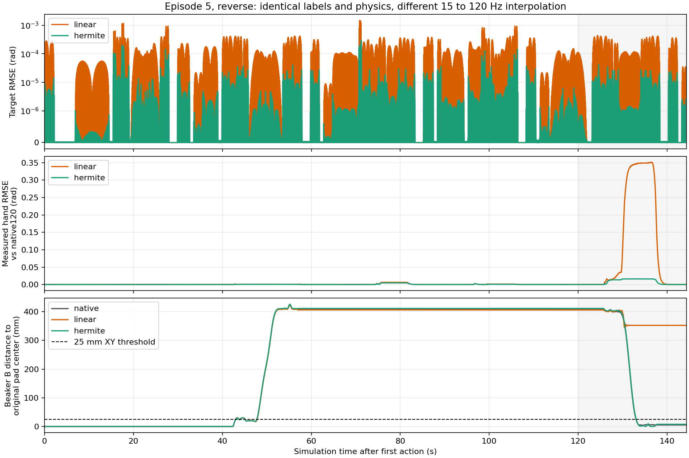
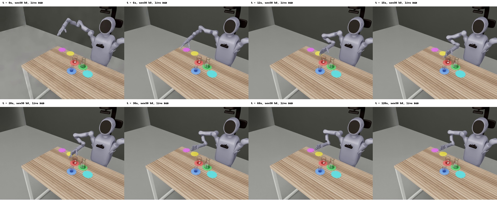

更新 2026-11-04T01:12:54.644159+00:00。现行协议 SafeLab-Eval-v1.1 / placement-v1.1。正式A/B暂停，没有新正式成功率；全部旧7023条仍为管线待查。下列诊断不并入正式表。
更新 2026-11-04T00:07:28.730114+00:00。原生回放10/10，新Hermite链10/10；十条中最大的全13维120Hz聚合RMSE为0.00459148rad，低于0.005rad门槛。正反各5、同一源码SHA：86a69c233411c7183374fc06932eedcc5ee7431cdc3cbee42ec67b5bcc777dfb。这是专家执行链通过，不代表模型成功率已经提高。
旧线性链的ep5失败可逐值复现，原生重复也逐值一致；该场景只换执行链后，RMSE由0.05148降至0.002936rad，B最终回位误差由352.57降至7.55mm（原生5.13mm）。XY门槛25mm、物理参数和接触条件不变。没有附着，没有未来传感器输入。
| episode | 方向 | 全13维RMSE rad | 原生完成 | 新链完成 |
|---|---|---|---|---|
| 5 | reverse | 0.00293635 | True | True |
| 0 | forward | 0.00170310 | True | True |
| 1 | reverse | 0.00036885 | True | True |
| 2 | forward | 0.00125458 | True | True |
| 3 | reverse | 0.00459148 | True | True |
| 4 | forward | 0.00141273 | True | True |
| 6 | forward | 0.00045245 | True | True |
| 7 | reverse | 0.00047989 | True | True |
| 8 | forward | 0.00084387 | True | True |
| 9 | reverse | 0.00379891 | True | True |
h4/h8队列通过214790次真实标签核对和80次切换边界；新流式放置判定通过9项合约和40条真实日志，事件tick、阶段及最终结果与冻结离线判定一致。原始失败链、严格成绩和unknown均保留。第七个fixed_v1权重仍需独立光学及专家核验。

更新 2026-11-04T00:45:57.468793+00:00。Mem-0 pos1cm30k、h8的新正向轨迹完整240秒，停在阶段0；独立核验28800次实测PhysX位置/速度写入及全部判定事件，模型未抓起烧杯。此前初始化时中断的1条仍记unknown，不重试或漏计；反向条目也已完整结束并通过独立控制/判定审计，停在阶段0。两条有效预检共核验57600次PhysX写入；此前1条unknown保留在独立预检分母内。反向原始gzip日志保留在本机内存文件系统并已异步归档。该条原为未启动，没有中断Native或在途推理。原有host16GiB、GPU8GiB、本地/共享内存1GiB运行保护均保留，日志另有512MiB独立上限。
正向片段中A最高抬起3.4mm，门槛52mm；首条Planner指令正确为“Move beaker1 from the red pad to the yellow pad.”。抽帧可见手在移动而杯子未随手抬起，当前证据指向未形成有效抓持，不能只归因于静止判定，也未证明具体是哪一个抓取参数导致。

预检不是20条准入，不进入正式成功率。六个pos1cm权重各20条、共120条的独立启动包已完成归档源码、统计文件和路径CPU核验，尚未全部开跑；weight全SHA在每模型加载前核验。fixed_v1第七权重仍需独立核验光学和专家执行链。新控制器完整10条专家通过，不能代替这些模型测试。完整原始视频保留；公开媒体路径仍403，未上传无效索引或临时签名URL。
更新 2026-11-04T04:25:55.954290+00:00。20k在GPU0、30k在GPU1，本任务每卡N1×1独立进程，模型、Planner、端口、记忆、随机数和日志独立。本次快照20k闭合12/20、30k闭合14/20；各一条在跑，完整批次success=null。固定场景20–39、正反各10、执行8步、原始接触；不重试此前unknown场景，没有自动派发阶段A。
这两批在存储新规前启动，当前批次允许跑完，原始gzip异步SHA归档、原件保留。新派发必须使用指定NAS大小件目录；四个旧CPU串行等待器已撤，另外80个混合case仅CPU准备就绪，尚未通过Native路由集成与节点增k准入。没有新增云卡。
更新 2026-11-04T04:25:55.954290+00:00。最近快照：20k已独立验收12/20条，30k已验收14/20条，各有一条在跑；整批未完成，不发布部分样本成功率，phase_hist只计闭合样本。
在相同场景20、seed0的首帧，20k/30k的实测13关节值最大差0，RGB均差0.483/255；这只验证该首帧，不能代替全部时刻渲染准入。30k首条的A在仿真24.683秒触发物理阶段1，模型到81.667秒才切换指令，间隔56.983秒。期间6839个原始物理tick全部满足同一冻结放置几何条件，手接触比例0、桌面支持接触比例100%，最大XY误差6.01mm。因此这段间隔确实发生在持续合格放置后，尚未确定是训练标签、完成头还是其他模型因素，未改变原oracle或推理阈值。
切换帧的原始executor_status是refresh后的新指令状态；发布媒体时不得把它归到旧指令。缺失切换前分数/计数时填null，不补0。该时序分析是诊断，不能把物理单阶段通过当成全任务成功。
current_row执行链10条专家门槛未通过：ep5全13维RMSE0.05148rad>0.005rad，原生成功、15Hz端点链只到阶段4；此为旧线性链结论；新控制器完整10条已通过，仍需各模型新闭环冒烟。 已完成10/10对，均为原始训练episode，正反各5的固定名单。源输入与控制源码SHA保留。原15Hz标签经线上current_row控制模块直接执行，float32入口、立即下发当前标签、13维位置插值、仅arm7速度前馈，与真实模型链相同。没有把原型或数学近似冒充线上链。
| episode | 方向 | 13维120Hz RMSE rad | 原生成功 | 端点链成功 |
|---|---|---|---|---|
| 0 | forward | 0.0014022 | True | True |
| 1 | reverse | 0.003393 | True | True |
| 2 | forward | 0.0014269 | True | True |
| 3 | reverse | 0.0016456 | True | True |
| 4 | forward | 0.0020023 | True | True |
| 5 | reverse | 0.0514815 | True | False |
| 6 | forward | 0.000721 | True | True |
| 7 | reverse | 0.00072 | True | True |
| 8 | forward | 0.0008068 | True | True |
| 9 | reverse | 0.0008457 | True | True |
失败ep5的初始q13和物体位姿逐值相同。原生与端点链的手臂RMSE约0.000215rad，偏差主要来自最后放回B时的手指：hand2_joint_link_3_1全轨迹RMSE0.1351rad。全部指令差RMSE仅0.000144rad；不能据此认定全部模型失败来自插值。第3阶段先出现轻微手指分歧，最后阶段放大。正排队用相同原生/端点指令各复跑一次，区分接触重复性与控制近似；原失败证据不会被替换。若改执行链，受影响A须重跑。
7071/7071有效，unknown=0：原8条专家严格判定与placement-v1.1均8/8；7063条模型轨迹新旧均无全程成功，其中7023条为旧管线批次、40条为两批光学修复冒烟。10个配置组的阶段分布有变化，不能把全部失败归因于静止判定。新判定保留25mm XY、直立cos≥0.97、顺序、观察到抬起和灾难性失败；无机器人接触，目标支撑或静态高度±5mm，连续30tick去抖；无速度/漂移门槛。离线结果在日志末端核验最终ABC目标，属于保守口径。旧漂移候选已撤销。
源码SHA256：b23aa3df68b91e06aadf0af685161b5189200c4fdddd6fad248cb98867dd679b。CPU合约9项通过（包括每类10个合成负例）；合成检查不代替真实视频。真实握持、倾倒、出区域各10条已找到，保持原筛选条件，逐条抽帧与日志核对已通过。专家执行链门槛未通过，重算仍只作诊断。
| 模型 | ckpt | 有效冒烟n | unknown | 阶段分布 | 状态 |
|---|---|---|---|---|---|
| new20 | 20000 | 0 | 20 | {} | 旧任务20条均基础设施unknown，无有效冒烟；不重试未知scene0–19。current_row执行链10条专家门槛未通过：ep5全13维RMSE0.05148rad>0.005rad，原生成功、15Hz端点链只到阶段4；此为旧线性链结论；新控制器完整10条已通过，仍需各模型新闭环冒烟。 |
| new30 | 30000 | 20 | 0 | {'0': 16, '1': 0, '2': 3, '3': 1, '4': 0, '5': 0} | strict-v1冒烟20条闭合；原A任务43条闭合、20unknown、137未启动，均保留为历史。current_row执行链10条专家门槛未通过：ep5全13维RMSE0.05148rad>0.005rad，原生成功、15Hz端点链只到阶段4；此为旧线性链结论；新控制器完整10条已通过，仍需各模型新闭环冒烟。 |
| weak20 | 20000 | 0 | 0 | {} | Planner实际CPU入口检查通过；四模型共享NN池逐lane固定输入验证通过，输出最大差0。物理冒烟未启动；current_row执行链10条专家门槛未通过：ep5全13维RMSE0.05148rad>0.005rad，原生成功、15Hz端点链只到阶段4；此为旧线性链结论；新控制器完整10条已通过，仍需各模型新闭环冒烟。 |
| weak30 | 30000 | 0 | 0 | {} | Planner实际CPU入口检查通过；四模型共享NN池逐lane固定输入验证通过，输出最大差0。物理冒烟未启动；current_row执行链10条专家门槛未通过：ep5全13维RMSE0.05148rad>0.005rad，原生成功、15Hz端点链只到阶段4；此为旧线性链结论；新控制器完整10条已通过，仍需各模型新闭环冒烟。 |
| ours30 | 30000 | 0 | 0 | {} | Planner实际CPU入口检查通过；四模型共享NN池逐lane固定输入验证通过，输出最大差0。物理冒烟未启动；current_row执行链10条专家门槛未通过：ep5全13维RMSE0.05148rad>0.005rad，原生成功、15Hz端点链只到阶段4；此为旧线性链结论；新控制器完整10条已通过，仍需各模型新闭环冒烟。 |
| oursalignedweak30 | 30000 | 0 | 0 | {} | Planner实际CPU入口检查通过；四模型共享NN池逐lane固定输入验证通过，输出最大差0。物理冒烟未启动；current_row执行链10条专家门槛未通过：ep5全13维RMSE0.05148rad>0.005rad，原生成功、15Hz端点链只到阶段4；此为旧线性链结论；新控制器完整10条已通过，仍需各模型新闭环冒烟。 |
| old30 | 30000 | 0 | 0 | {} | 尚未冒烟；已从原导出记录独立核验fixed反向ep50的DLD=False与相机K，正向DLD和fractional策略未有足够记录；不套用pos1cm光学修复。 |
new30旧A：h4已闭合22、unknown10、未启动68；h8已闭合21、unknown10、未启动69。unknown留在分母，不重试已启动未知轨迹；部分样本不报最终成功率。四模型旧合批因Planner漏传--kind next在Native之前退出，0模型轨迹、80未启动。修复后先完成CPU与NN池检查，不把启动错误算模型失败。
pos1cm恢复源DLD=True、fractionalCutoutOpacity=True及renderer_camera_audit内参链；原120Hz专家与早期端点回放8/8、多帧MAE1.56–2.02/255。该8条证据不替代新10条literal执行链门槛。fixed_v1独立记录显示反向ep50 DLD=False，相机K已核对；正向和fractional策略尚缺记录，不直接套用pos1cm补丁。
六个pos1cm权重的修正Native输入开环RMSE为自身训练RGB参照的0.77–1.35倍，总负责已认可通过，无需等训练loss。四模型weak20/weak30/ours30/oursalignedweak30的NN池固定输入对照全部通过：两条独立lane、h4/h8交错、多次子任务切换，fused/raw/selected输出最大差均0。共享只读网络，记忆与RNG独立；TTC的Gen/cluster/config也独立，Mem-0分支不含这些对象。此为模型侧等价验证，不能冒充物理48条准入或闭环成功。缺RGB的首次探针在推理前失败，已加CPU逐文件SHA/形状检查并在加载权重前执行。
低优运行0卡、预留0卡。此前四卡持续600秒均值GPU45.07%、显存49.24%，未达到80%，未新申请卡。当前只在已有Pro GPU1顺序做专家诊断，最多一个Native，模型池证明已退出。N4已结题，吞吐上界1.02低于1.3。不动其他会话、进程或共享hook。没有因共享磁盘拥塞而重复派发已启动轨迹。
8段完整时长H.264/yuv420p/faststart预览已CPU完成，合计3,324,143字节、每段≤2MB。逐帧日志v3只记录实际观测帧；终态物理事件保留，没有伪造额外RGB帧，缺失值保持null。派生视频已SHA核对复制到要求的公开命名空间，但匿名下载返回403，受权对象ACL读取也403；未执行ACL写入，未改桶ACL/CORS，未用签名链接。浏览器因此未通过播放验证，没有写无效media/index索引；本地预览可用。
| 来源 | 模型 | ckpt | h | 条件 | n | 严格成功 | placement成功 | 严格平均阶段 | placement平均阶段 | 严格分布 | placement分布 |
|---|---|---|---|---|---|---|---|---|---|---|---|
| expert_original8 | expert | None | None | baseline | 8 | 8 | 8 | 5.0 | 5.0 | {'5': 8} | {'5': 8} |
| cloud4_current_row_smoke20_v4 | new30 | 30000 | 8 | baseline | 20 | 0 | 0 | 0.45 | 0.45 | {'0': 16, '2': 3, '3': 1} | {'0': 16, '2': 3, '3': 1} |
| cloud4_source_optics_smoke20_v1 | new30 | 30000 | 8 | baseline | 20 | 0 | 0 | 0.25 | 0.25 | {'0': 17, '1': 1, '2': 2} | {'0': 17, '1': 1, '2': 2} |
| legacy_pipeline_suspect | old30 | 30000 | 8 | baseline | 200 | 0 | 0 | 1.115 | 1.115 | {'4': 1, '3': 27, '2': 40, '1': 58, '0': 74} | {'4': 1, '3': 27, '2': 40, '1': 58, '0': 74} |
| legacy_pipeline_suspect | old30 | 30000 | 4 | baseline | 200 | 0 | 0 | 1.27 | 1.27 | {'3': 30, '2': 58, '1': 48, '0': 64} | {'3': 30, '2': 58, '1': 48, '0': 64} |
| legacy_pipeline_suspect | old30 | 30000 | 8 | attachment | 200 | 0 | 0 | 1.06 | 1.115 | {'3': 26, '2': 28, '1': 78, '0': 68} | {'3': 28, '2': 32, '1': 75, '0': 65} |
| legacy_pipeline_suspect | old30 | 30000 | 30 | attachment | 200 | 0 | 0 | 0.475 | 0.48 | {'3': 6, '2': 16, '1': 45, '0': 133} | {'3': 6, '2': 16, '1': 46, '0': 132} |
| legacy_pipeline_suspect | old30 | 30000 | 4 | attachment | 200 | 0 | 0 | 0.795 | 0.845 | {'3': 13, '2': 17, '1': 86, '0': 84} | {'3': 14, '2': 23, '1': 81, '0': 82} |
| legacy_pipeline_suspect | old30 | 30000 | 30 | baseline | 200 | 0 | 0 | 0.14 | 0.145 | {'2': 3, '1': 22, '0': 175} | {'2': 3, '1': 23, '0': 174} |
| legacy_pipeline_suspect | new30 | 30000 | 30 | attachment | 200 | 0 | 0 | 0.025 | 0.025 | {'2': 2, '1': 1, '0': 197} | {'2': 2, '1': 1, '0': 197} |
| legacy_pipeline_suspect | new30 | 30000 | 8 | attachment | 200 | 0 | 0 | 0.085 | 0.095 | {'2': 1, '1': 15, '0': 184} | {'2': 2, '1': 15, '0': 183} |
| legacy_pipeline_suspect | new20 | 20000 | 30 | attachment | 200 | 0 | 0 | 0.03 | 0.035 | {'2': 1, '1': 4, '0': 195} | {'2': 2, '1': 3, '0': 195} |
| legacy_pipeline_suspect | new30 | 30000 | 8 | baseline | 200 | 0 | 0 | 0.05 | 0.05 | {'1': 10, '0': 190} | {'1': 10, '0': 190} |
| legacy_pipeline_suspect | new20 | 20000 | 8 | baseline | 200 | 0 | 0 | 0.03 | 0.03 | {'1': 6, '0': 194} | {'1': 6, '0': 194} |
| legacy_pipeline_suspect | new20 | 20000 | 4 | baseline | 200 | 0 | 0 | 0.055 | 0.055 | {'1': 11, '0': 189} | {'1': 11, '0': 189} |
| legacy_pipeline_suspect | new30 | 30000 | 4 | baseline | 200 | 0 | 0 | 0.06 | 0.06 | {'1': 12, '0': 188} | {'1': 12, '0': 188} |
| legacy_pipeline_suspect | ours30 | 30000 | 8 | baseline | 146 | 0 | 0 | 0.00684931506849315 | 0.00684931506849315 | {'1': 1, '0': 145} | {'1': 1, '0': 145} |
| legacy_pipeline_suspect | new30 | 30000 | 30 | baseline | 200 | 0 | 0 | 0.005 | 0.005 | {'1': 1, '0': 199} | {'1': 1, '0': 199} |
| legacy_pipeline_suspect | new20 | 20000 | 30 | baseline | 200 | 0 | 0 | 0.005 | 0.005 | {'1': 1, '0': 199} | {'1': 1, '0': 199} |
| legacy_pipeline_suspect | new20 | 20000 | 4 | attachment | 200 | 0 | 0 | 0.02 | 0.035 | {'1': 4, '0': 196} | {'1': 5, '2': 1, '0': 194} |
| legacy_pipeline_suspect | new30 | 30000 | 4 | attachment | 200 | 0 | 0 | 0.02 | 0.03 | {'1': 4, '0': 196} | {'2': 2, '1': 2, '0': 196} |
| legacy_pipeline_suspect | new20 | 20000 | 8 | attachment | 200 | 0 | 0 | 0.015 | 0.015 | {'1': 3, '0': 197} | {'1': 3, '0': 197} |
| legacy_pipeline_suspect | weak30 | 30000 | 8 | attachment | 149 | 0 | 0 | 0.026845637583892617 | 0.026845637583892617 | {'1': 4, '0': 145} | {'1': 4, '0': 145} |
| legacy_pipeline_suspect | oursalignedweak30 | 30000 | 4 | baseline | 76 | 0 | 0 | 0.013157894736842105 | 0.013157894736842105 | {'1': 1, '0': 75} | {'1': 1, '0': 75} |
| legacy_pipeline_suspect | oursalignedweak30 | 30000 | 30 | attachment | 77 | 0 | 0 | 0.012987012987012988 | 0.012987012987012988 | {'1': 1, '0': 76} | {'1': 1, '0': 76} |
| legacy_pipeline_suspect | oursalignedweak30 | 30000 | 8 | attachment | 76 | 0 | 0 | 0.02631578947368421 | 0.02631578947368421 | {'1': 2, '0': 74} | {'1': 2, '0': 74} |
| legacy_pipeline_suspect | oursalignedweak30 | 30000 | 4 | attachment | 74 | 0 | 0 | 0.02702702702702703 | 0.02702702702702703 | {'1': 2, '0': 72} | {'1': 2, '0': 72} |
| legacy_pipeline_suspect | weak20 | 20000 | 4 | baseline | 200 | 0 | 0 | 0.0 | 0.0 | {'0': 200} | {'0': 200} |
| legacy_pipeline_suspect | weak20 | 20000 | 30 | baseline | 200 | 0 | 0 | 0.0 | 0.0 | {'0': 200} | {'0': 200} |
| legacy_pipeline_suspect | weak20 | 20000 | 8 | baseline | 200 | 0 | 0 | 0.0 | 0.0 | {'0': 200} | {'0': 200} |
| legacy_pipeline_suspect | weak30 | 30000 | 4 | baseline | 149 | 0 | 0 | 0.0 | 0.0 | {'0': 149} | {'0': 149} |
| legacy_pipeline_suspect | weak30 | 30000 | 8 | baseline | 149 | 0 | 0 | 0.0 | 0.0 | {'0': 149} | {'0': 149} |
| legacy_pipeline_suspect | weak30 | 30000 | 30 | baseline | 149 | 0 | 0 | 0.0 | 0.0 | {'0': 149} | {'0': 149} |
| legacy_pipeline_suspect | ours30 | 30000 | 4 | baseline | 146 | 0 | 0 | 0.0 | 0.0 | {'0': 146} | {'0': 146} |
| legacy_pipeline_suspect | ours30 | 30000 | 30 | baseline | 146 | 0 | 0 | 0.0 | 0.0 | {'0': 146} | {'0': 146} |
| legacy_pipeline_suspect | weak30 | 30000 | 4 | attachment | 149 | 0 | 0 | 0.0 | 0.0 | {'0': 149} | {'0': 149} |
| legacy_pipeline_suspect | weak30 | 30000 | 30 | attachment | 148 | 0 | 0 | 0.0 | 0.0 | {'0': 148} | {'0': 148} |
| legacy_pipeline_suspect | weak20 | 20000 | 4 | attachment | 200 | 0 | 0 | 0.0 | 0.0 | {'0': 200} | {'0': 200} |
| legacy_pipeline_suspect | weak20 | 20000 | 30 | attachment | 200 | 0 | 0 | 0.0 | 0.005 | {'0': 200} | {'0': 199, '1': 1} |
| legacy_pipeline_suspect | weak20 | 20000 | 8 | attachment | 200 | 0 | 0 | 0.0 | 0.0 | {'0': 200} | {'0': 200} |
| legacy_pipeline_suspect | ours30 | 30000 | 4 | attachment | 146 | 0 | 0 | 0.0 | 0.0 | {'0': 146} | {'0': 146} |
| legacy_pipeline_suspect | ours30 | 30000 | 8 | attachment | 146 | 0 | 0 | 0.0 | 0.00684931506849315 | {'0': 146} | {'0': 145, '1': 1} |
| legacy_pipeline_suspect | ours30 | 30000 | 30 | attachment | 145 | 0 | 0 | 0.0 | 0.0 | {'0': 145} | {'0': 145} |
| legacy_pipeline_suspect | oursalignedweak30 | 30000 | 30 | baseline | 75 | 0 | 0 | 0.0 | 0.0 | {'0': 75} | {'0': 75} |
| legacy_pipeline_suspect | oursalignedweak30 | 30000 | 8 | baseline | 77 | 0 | 0 | 0.0 | 0.0 | {'0': 77} | {'0': 77} |
机器可读完整状态 · 专家执行链及首个分歧 · 四模型池对照 · 真实负例证据 · 此前诊断（历史记录）
四个CPU等待器已停止，均未加载模型、未启动Isaac、未中断科学轨迹。其文件已复制至允许的小件目录，逐文件SHA通过，原件保留。此前“GPU0/1逐模型自动接续”已作废，不应再按旧队列调度。两路已经运行的Mem-0 20k/30k批次继续。另四权重80个case已按模型交错准备；NAS原始大文件直写大件目录、状态JSON写小件目录，7项CPU路由检查通过，冻结控制器未变。新路由尚未做Native集成预检、尚未实际派发，等待现有算力入口后按节点并行准入。
这是特定截止快照的CPU分析，不是完整冒烟成绩：new20的11条全部阶段0，其中正向6条未达原抓起高度、反向5条物体倾倒。new30的12条为阶段0六条、阶段1四条、阶段2两条；正向6条中4条过阶段0、2条已抬起但放置未被接受；反向6条中2条过阶段0、4条倾倒。倾倒只按日志事实分类，不能据此认定碰撞成因。当前整体进度可能已超过本诊断23条，不把未分析样本套用同一失败类别。
实际旧/新指令逐次核对：new30场景20、22、28中，A放置持续合格且无手接触后，分别又过56.983、54.975、75.417秒仿真时间才切换指令。75.417秒对应9051个连续有效原始tick，不是模型排队墙钟时间。反向场景21约4.583秒；不能把所有布局统一称为切换很慢。
还存在相反方向的偏差：场景22从C搬运切到归还A前，C距目标约32.00mm；场景26从A搬运切到B前，A距目标约39.87mm。两者均超出25mm，且切换前30tick几何有效率0。模型阶段不能代替物理验收；未放宽位置容差、阈值或oracle。这些是可复核症状，尚不能证明训练标签或具体运行时实现存在因果缺陷。
额外模型调用0、GPU启动0。切换帧refresh后的状态属于新指令，缺失旧指令分数仍填null。完整证据见本页JSON中closed_smoke_mechanisms_CPU和observed_switch_geometry_CPU。
更新 2026-11-04T03:36:13.106978+00:00。已先核对capabilities再查询平台：added4创建已SUCCEEDED，其作业job-kpxpynodhyra已FAILED；new30_A、new20_smoke也FAILED，三组副本均已释放。当前本任务云卡0、预留0，没有仍在创建的fz5scxm0rco3ibqch8i20azy3需要取消，也没有8张在用卡可以保留。未发起无效取消或新建卡请求。现有共享双卡按每卡N1×1运行；不把节点瞬时总利用率冒充本任务10分钟均值。
v1.1放置判定继续使用25mm XY、直立cos≥0.97、无机器人接触、支撑接触或静置高度±5mm、连续30tick；无速度/漂移门槛。顺序、0.65×源抬升高度、掉落/碰倒和最终A/B/C位置检查保留。5b遮挡任务的冻结五阶段不含柜门；不混入其他五任务的开门步骤。9项CPU合同含开局在目标但未抬升不得完成；40条原始轨迹流式/离线对照通过。旧7071条已CPU重算、unknown0，其中专家8/8、模型7063条仍0成功；旧7023仍因管线问题隔离。
已补齐正反各5条执行链验收：Native10/10、Hermite10/10，最差单episode全13关节/时间聚合RMSE=0.00459148rad；单关节最大RMSE也在JSON中披露，不把两种聚合混称。此前字面线性current_row链在完整10条里是9/10且最大聚合0.05148，因此旧链不能凭早先8/8追认合格。当前current_row映射对13维位置使用Hermite，速度前馈保持原生arm7有限差分/hand6为0的例外；不能声称已给13维都加速度前馈。当前冻结SHA86a69c23不再改动；旧受影响结果只作诊断，正式A需过每模型完整20条准入。
新增CPU伴随程序持续为当前闭合轨迹独立计算strict-v1和v1.1；最近已核对18条，额外模型调用0。strict-v1在五任务原来是121tick位姿漂移窗，并非瞬时角速度；本次对照仅覆盖v1.1实际保存的完整轨迹，不虚构额外strict尾段。双判定尚无完整成功，平均阶段与分布见JSON。
存储：本轮两个任务目录分别5.61GB/2.43GB，合计8.05GB；五个已知旧快盘输出目录待迁移约54.04GB（不含共享只读SDK/基座及未知历史目录）。这不是两个liyufeng前缀的全量占用。全前缀du超时后，一次600秒、低优先级的只读元数据扫描已到达时限；小文件前缀已计数约940.05GB/378万文件，仍未遍历完，大文件前缀未得到完整计数。因此两个全前缀合计仍未知，940.05GB只是已见下界，不能据此宣称低于2TB。没有删除原文件；新派发必须使用允许的两个前缀。回信接口在此次续接前已过期，未向过期接口发送。
TOS逐对象上传携带public-read和禁止覆盖；8段均通过匿名GET=200、完整字节SHA和Range=206，总3,324,143 bytes，无签名参数、未改桶ACL/CORS。这8段来自此前strict-v1/current_row线性链的20条冒烟，全部为失败诊断，其中4条阶段较高；不代表当前Hermite链的新成绩。
响应尚缺Access-Control-Allow-Origin。可直接打开视频；对比页跨域fetch/哈希及逐帧日志仍等授权CORS/同源方案，不提交宣称完整可用的media/index项。原日志保留，缺视角不补造。
发现旧current_row线性链A还留下63个可观察已启动请求：43条有完整独立验收，20条缺完整闭合/验收。已全部CPU补算，43条均0完整成功，20条unknown留在分母；不把未开始的137条算作unknown，不重试任何推理请求。这批与原7071清单分开记录，不重复计算。
h4：32条含unknown10，有效阶段分布{0:19,1:3}，均值0.13636；h8：31条含unknown10，有效阶段分布{0:18,1:2,2:1}，均值0.19048。两种判定的成功数与阶段分布相同。已加两行SafeLab-Eval-v1.1/placement_v1.1_rescore诊断，分别指回原strict-v1 A行；旧线性执行链门槛失败，不能将这批CPU结果冒充新Hermite A或进入正式主表。
另已CPU核对评测100个场景正反各50、全部XY偏移分量在±1cm；此结果不替代仍受30109连接超时影响的训练原始100条布局/位姿检查。
七个权重×h4/h8已逐行登记v1.1附着阶段A，版本统一为stable_grasp_fixed_joint_v1，冻结配置SHA 3f1432579bb2eeca56131e5bfe725fdfd51841d74ebbb517e8342fb63f212750。真实接触两指、抬升至少15mm、0.2秒相对稳定后建立FixedJoint，沿用本版释放和误差限制。当前只登记，没有开始新链附着评测；必须先完成对应原始接触阶段A，并验证新链的附着/释放集成。旧附着视频或旧7023日志不能追认为新版成绩。
已使用本地已缓存的全部100份原训练profile，与冻结100评测profile重新逐项核对并生成SHA清单。两边正反均50/50；全部评测profile匹配冻结SHA；物体和所占垫位XY绑定精确一致；偏移均落在训练声明的逐轴±1cm内；物体Z、空垫位置、资产、尺寸、底高、颜色、相机位姿及目标点无差异。lerobot_v21_state13的state/action均13维。复算均值与之前保存的分布报告逐项一致，未发现反向镜像或重复随机化偏差。
范围限制：这是缓存配置声明审计，不能替代全100条120Hz实测初始位姿/四元数；也没有新确认30109上原文件的SHA。本次未修改场景，额外推理/仿真0。评测显式scene.objects/supports和evaluation_pos1cm是有效坐标；继承的local45_position1518仅描述训练父配置，build_scene关闭二次随机化。
完整600秒遥测窗，GPU0均值88.76%，GPU1均值43.31%。这是共享卡全卡均值，包含其他工作，不归因为本任务独占；不以GPU0达标掩盖GPU1未达80%，不申请新卡。当前本任务N1×1/卡，已核对自身父/子进程身份；两路Native的RSS约12.51/13.92GiB，执行器约3.07/2.59GiB，不能按显存空闲就增加Native进程。独立后端48条试批此前仍因主存保护中断，固定输入1.55倍加速不能冒充物理验收通过。